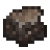
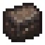
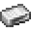

锻铁炉


锻铁炉是一种用于将铁矿石熔炼成生铁方坯的设备。铁矿石包含赤铁矿、褐铁矿和磁铁矿。这些矿石都可以用锻铁炉熔化成铸铁。
锻铁炉
多方块结构: tfc:bloomery
最基础的锻铁炉结构。锻铁炉方块可以用右键打开或关闭。
最大的锻铁炉可以同时在容纳 24 块铁矿石和 24 块木炭，每层烟囱可以容纳矿石木炭各 8 个。可以在最基础的锻铁炉结构上额外搭建两层烟囱来达到最大容量。
矿石和燃料只能从锻铁炉顶部的烟囱中投入。

将物品添加到锻铁炉中。
锻铁炉中的矿石和木炭数量必须相等。锻铁炉需要大半天的时间来将铁熔化。当锻铁炉块熄灭时就表示完成了。在锻铁炉中熔化的每 100 mB 铁矿石都会转化为一个方坯。用镐反复挖掘方坯就能获得生铁方坯。
方坯
多方块结构
一个方坯，充满了锻铁。



第二级
生铁方坯还必须在砧上打造成精铁方坯。

第二级
在砧上进一步打造精铁方坯就能获得锻铁锭了。
铁匠的笔记
- 如果投入锻铁炉的物品超出了它的所能处理的数量，它就会从锻铁炉门口吐出来。
- 如果要取回投入锻铁炉中的物品，不要试图挖掘塔中的熔融物，直接把锻铁炉方块挖掉即可。
- 方坯只会熔化成铸铁，而不是锻铁。方坯必须经过锤炼才能变成锻铁！
- 锻铁炉只关心投入其中的物品的数量，而不是质量。在锻铁炉中烧炼富矿与贫矿会消耗等量的木炭！
- 熔融物很容易将周围的其他方块点着，千万小心！